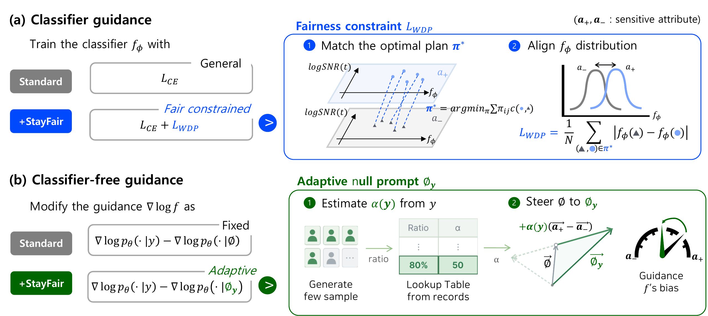
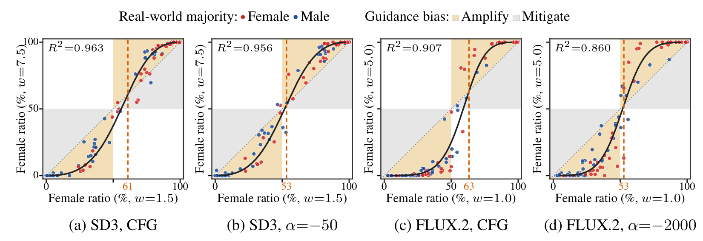

No matter which guidance scale is selected by the user,group fairness should be preserved.
With standard guidance, group ratios drift as the scale moves, even in debiased models. StayFair holds them steady across the whole range.
To keep fairness at every scale,we need a fair model and fair guidance.
Prior work targets the total bias, overlooking a guidance bias that moves with $w$.
where $Q^w$ is the group distribution generated at scale $w$, $T$ is the target distribution, and $w_{\mathrm{ref}}$ is a reference scale.
We define fair guidance as guidance that keeps the group ratio unchanged across scales.
With a fair model, fair guidance achieves guidance scale-invariant group fairness.
We proposeStayFair, fair guidance for both CG and CFG.
For Classifier Guidance,
StayFair adds a fairness constraint that aligns the classifier's outputs across groups.
For Classifier-Free Guidance,
StayFair keeps the CFG formula and only replaces its null prompt $\varnothing$ with an adaptive null prompt $\varnothing_y$.
Values from Figure 3 of the paper.
Implementation

StayFair debiases guidance,lowering the bias range while keeping image quality.
Smaller bias range, image quality keptGroup ratios move less across scales on SD1.5, SD3, and FLUX.2, with image quality comparable to CFG.
Lower average and worst biasReducing guidance bias also lowers total bias across the scale range.
| Bias (%) ↓ | Quality ↑ | ||||||
|---|---|---|---|---|---|---|---|
| Model | Guidance | Avg. | Worst | Range | CLIP | Aesth. | Pick |
| SD1.5 | CFG | 28.0 ±0.3 | 32.5 ±0.5 | 10.7 ±0.7 | 27.61 | 6.70 | 19.99 |
| StayFair | 27.6 ±0.6 | 30.8 ±0.5 | 7.2 ±0.3 | 27.62 | 6.70 | 19.96 | |
| SD3 | CFG | 39.7 ±0.5 | 43.0 ±0.4 | 9.1 ±0.3 | 27.36 | 6.62 | 20.29 |
| StayFair | 33.9 ±0.5 | 36.6 ±0.5 | 6.3 ±0.2 | 27.38 | 6.61 | 20.23 | |
| FLUX.2 | CFG | 39.4 ±0.2 | 44.3 ±0.2 | 15.9 ±0.6 | 28.18 | 6.93 | 21.15 |
| StayFair | 32.7 ±0.3 | 36.0 ±0.1 | 8.4 ±0.9 | 28.17 | 6.93 | 21.18 | |
Smaller bias range, image quality keptStayFair reduces bias ranges with UCE and FT, with image quality comparable to CFG.
Debiasing kept, worst case improvedStayFair keeps their average debiasing performance while lowering worst bias.
Better than extending debiasingStayFair gives lower bias ranges than Multi, which extends debiasing across scales.
| Bias (%) ↓ | Quality ↑ | |||||||
|---|---|---|---|---|---|---|---|---|
| Method | Scales | Guidance | Avg. | Worst | Range | CLIP | Aesth. | Pick |
| UCE | Single | CFG | 18.0 | 23.4 | 13.2 | 27.28 | 6.70 | 19.96 |
| Multi (random) | CFG | 19.1 | 24.2 | 13.7 | 27.38 | 6.71 | 19.89 | |
| Multi (per-scale) | CFG | 17.7 | 29.4 | 30.6 | 27.32 | 6.71 | 19.92 | |
| Single | StayFair | 18.5 | 22.2 | 7.6 | 27.28 | 6.70 | 19.96 | |
| FT | Single | CFG | 14.1 | 21.3 | 19.3 | 27.54 | 6.77 | 20.03 |
| Multi (random) | CFG | 16.5 | 21.3 | 12.0 | 27.63 | 6.79 | 20.07 | |
| Multi (per-scale) | CFG | 13.6 | 22.0 | 17.9 | 27.62 | 6.77 | 20.03 | |
| Single | StayFair | 13.8 | 18.2 | 9.4 | 27.53 | 6.77 | 20.03 | |
Range: max − min of the female ratio across guidance scales. Avg. / Worst: total bias averaged or maximized across scales.
Gender bias is amplified asymmetrically,seen through the lens of guidance bias.
T2I models overrepresent male majorities more often than female ones, relative to workforce statistics (Girrbach et al., 2025; Gupta and Brown, 2026). Why remains unclear.

| SD3 | FLUX.2 | |
|---|---|---|
| How often | 75.0% vs 70.8% | 96.2% vs 39.6% |
| How much | 8.4 vs 5.2 pp | 18.2 vs 13.1 pp |
| SD3 | FLUX.2 | |
|---|---|---|
| Null-distribution female ratio (est.) | 61% | 63% |
BibTeX
@misc{kim2026stayfairensuringgroup,
title={Stay Fair! Ensuring Group Fairness in Diffusion Models Across Guidance Scales},
author={Myeongsoo Kim and Eunji Kim and Minwoo Chae and Sangwoo Mo},
year={2026},
eprint={2605.28036},
archivePrefix={arXiv},
primaryClass={cs.CV},
url={https://arxiv.org/abs/2605.28036},
}